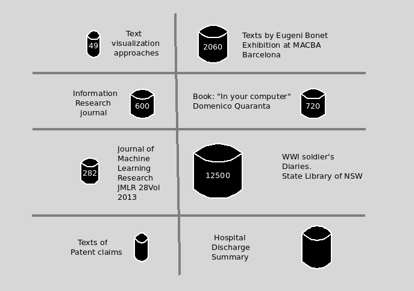
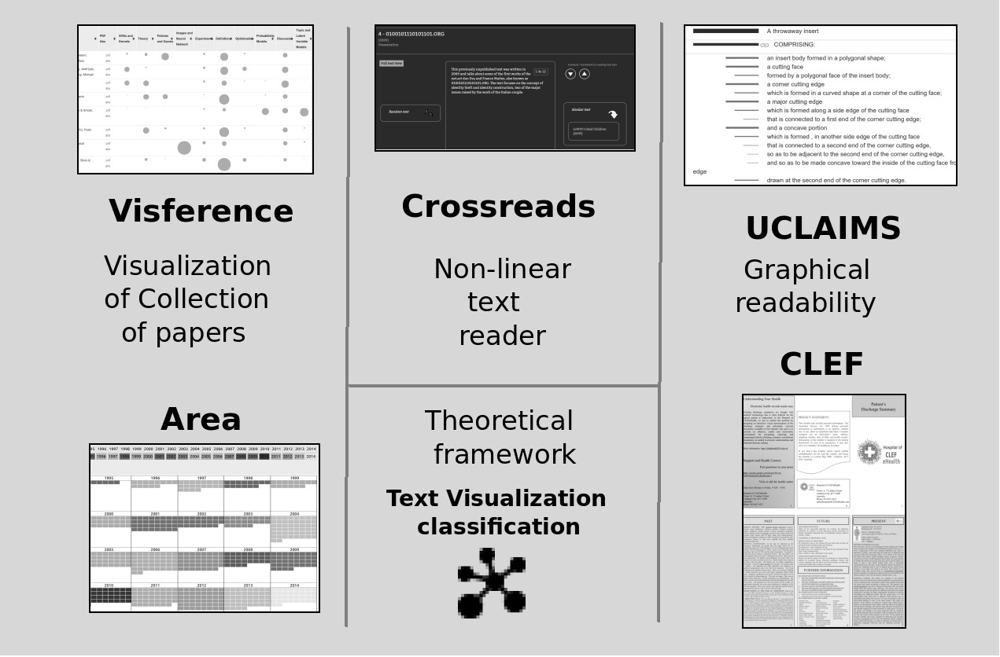
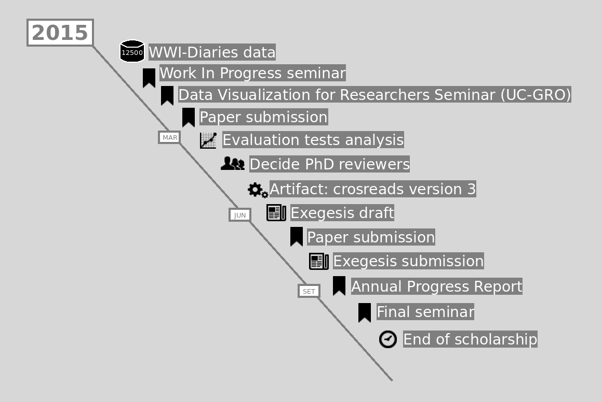

Abstract
This practice led research project has produced text visualization ideas that aim to help people when using digitalized texts in real scenarios. Those ideas, in turn, produced several artifacts
All this production plus the evaluation studies (not yet available), are the base to answer the research question: How can we create text visualisation tools that are used in real scenarios?



Thanks
jaume.nualart@canberra.edu.au
All documents and codes
are accessible here:
https://github.com/jaumet/myacademydata